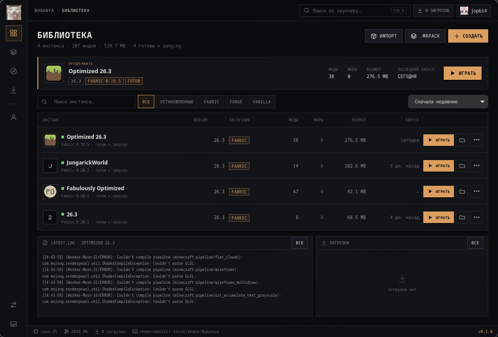

Forge и Fabric
Установка версий, загрузчиков, библиотек и ассетов. Официальный инсталлер Forge с обходом zlib на CachyOS.
Forge и Fabric, моды и модпаки с Modrinth, Java-менеджер, аккаунты и скины. Тёмный, быстрый лаунчер без телеметрии и рекламы.

Всё, что нужно для сборок, без лишних окон и настроек.
Установка версий, загрузчиков, библиотек и ассетов. Официальный инсталлер Forge с обходом zlib на CachyOS.
Поиск модов и модпаков, смена версий, обновление всех модов и автоустановка required-зависимостей.
Импорт .mrpack из файла, обновление установленного пака и сохранение миров при обновлении.
Adoptium JRE 8/17/21/25, проверка SHA256, авто-выбор под версию игры и скачивание при первом запуске.
Оффлайн-профили и Microsoft device-code вход. Токены в системном keyring, скины с официального sessionserver.
Прогресс, пауза, продолжение и отмена. Стриминг в файл и потоковая проверка SHA1 — без лишней RAM.
Пара шагов — и можно запускать.
Bubanya-linux-x86_64.AppImage.chmod +x Bubanya-linux-x86_64.AppImage.~/.local/share/Bubanya.Bubanya-windows-x64-setup.exe.